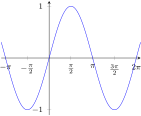
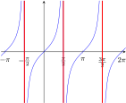

Section A.1 Trigonometry
Subsection A.1.1 Trigonometry — Graphs
\begin{equation*}
\sin \theta
\end{equation*}
\begin{equation*}
\cos \theta
\end{equation*}
\begin{equation*}
\tan \theta
\end{equation*}


Subsection A.1.2 Trigonometry — Special Triangles
From the above pair of special triangles we have
\begin{align*}
\sin \frac{\pi}{4} &= \frac{1}{\sqrt{2}} & \sin \frac{\pi}{6} &= \frac{1}{2} & \sin \frac{\pi}{3} &= \frac{\sqrt{3}}{2}\\
\cos \frac{\pi}{4} &= \frac{1}{\sqrt{2}} & \cos \frac{\pi}{6} &= \frac{\sqrt{3}}{2} & \cos \frac{\pi}{3} &= \frac{1}{2}\\
\tan \frac{\pi}{4} &= 1 & \tan \frac{\pi}{6} &= \frac{1}{\sqrt{3}} & \tan
\frac{\pi}{3} &= \sqrt{3}
\end{align*}
Subsection A.1.3 Trigonometry — Simple Identities
- Periodicity\begin{align*} \sin(\theta+2\pi) &= \sin(\theta) & \cos(\theta+2\pi) &= \cos(\theta) \end{align*}
- Reflection\begin{align*} \sin(-\theta)&=-\sin(\theta) & \cos(-\theta) &=\cos(\theta) \end{align*}
- Reflection around \(\pi/4\)\begin{align*} \sin\left(\tfrac{\pi}{2}-\theta\right)&=\cos\theta & \cos\left(\tfrac{\pi}{2}-\theta\right)&=\sin\theta \end{align*}
- Reflection around \(\pi/2\)\begin{align*} \sin\left(\pi-\theta\right)&=\sin\theta & \cos\left(\pi-\theta\right)&=-\cos\theta \end{align*}
- Rotation by \(\pi\)\begin{align*} \sin\left(\theta+\pi\right)&=-\sin\theta & \cos\left(\theta+\pi\right)&=-\cos\theta \end{align*}
- Pythagoras\begin{align*} \sin^2\theta + \cos^2 \theta &=1\\ \tan^2\theta + 1 &= \sec^2\theta\\ 1 + \cot^2 \theta &=\csc^2\theta \end{align*}
- \(\sin\) and \(\cos\) building blocks\begin{gather*} \tan\theta=\frac{\sin\theta}{\cos\theta}\quad \csc\theta=\frac{1}{\sin\theta}\quad \sec\theta=\frac{1}{\cos\theta}\quad \cot\theta=\frac{\cos\theta}{\sin\theta}=\frac{1}{\tan\theta} \end{gather*}
Subsection A.1.4 Trigonometry — Add and Subtract Angles
- Sine\begin{align*} \sin(\alpha \pm \beta) &= \sin(\alpha)\cos(\beta) \pm \cos(\alpha)\sin(\beta) \end{align*}
- Cosine\begin{align*} \cos(\alpha \pm \beta) &= \cos(\alpha)\cos(\beta) \mp \sin(\alpha)\sin(\beta) \end{align*}
- Tangent\begin{align*} \tan(\alpha+\beta)&=\frac{\tan\alpha+\tan\beta}{1-\tan\alpha\tan\beta}\\ \tan(\alpha-\beta)&=\frac{\tan\alpha-\tan\beta}{1+\tan\alpha\tan\beta} \end{align*}
- Double angle\begin{align*} \sin(2\theta) &= 2\sin(\theta)\cos(\theta)\\ \cos(2\theta) &= \cos^2(\theta) - \sin^2(\theta)\\ &= 2\cos^2(\theta) - 1\\ &= 1 - 2\sin^2(\theta)\\ \tan(2\theta) &= \frac{2\tan(\theta)}{1-\tan^2\theta}\\ \cos^2\theta&=\frac{1+\cos(2\theta)}{2}\\ \sin^2\theta&=\frac{1-\cos(2\theta)}{2}\\ \tan^2\theta&=\frac{1-\cos(2\theta)}{1+\cos(2\theta)} \end{align*}
- Products to sums\begin{align*} \sin(\alpha)\cos(\beta)&= \frac{\sin(\alpha+\beta) + \sin(\alpha-\beta)}{2}\\ \sin(\alpha)\sin(\beta)&= \frac{\cos(\alpha-\beta) - \cos(\alpha+\beta)}{2}\\ \cos(\alpha)\cos(\beta)&= \frac{\cos(\alpha-\beta) + \cos(\alpha+\beta)}{2} \end{align*}
- Sums to products\begin{align*} \sin\alpha+\sin\beta &= 2 \sin\frac{\alpha+\beta}{2}\cos\frac{\alpha-\beta}{2}\\ \sin\alpha-\sin\beta &= 2 \cos\frac{\alpha+\beta}{2}\sin\frac{\alpha-\beta}{2}\\ \cos\alpha+\cos\beta &= 2 \cos\frac{\alpha+\beta}{2}\cos\frac{\alpha-\beta}{2}\\ \cos\alpha-\cos\beta &= -2 \sin\frac{\alpha+\beta}{2}\sin\frac{\alpha-\beta}{2} \end{align*}
Subsection A.1.5 Inverse Trigonometric Functions
\begin{equation*}
\arcsin x
\end{equation*}
\begin{equation*}
\arccos x
\end{equation*}
\(\arctan x\)
Domain: \(-1 \leq x \leq 1\)
Domain: \(-1 \leq x \leq 1\)
Domain: all real numbers
Range: \(-\frac{\pi}{2} \leq \arcsin x \leq \frac{\pi}{2}\)
Range: \(0 \leq \arccos x \leq \pi\)
Range: \(-\frac{\pi}{2} \lt \arctan x \lt \frac{\pi}{2}\)
Since these functions are inverses of each other we have
\begin{align*}
\arcsin(\sin \theta) &= \theta & -\frac{\pi}{2} \leq \theta \leq \frac{\pi}{2}\\
\arccos(\cos \theta) &= \theta & 0 \leq \theta \leq \pi\\
\arctan(\tan \theta) &= \theta & -\frac{\pi}{2} \leq \theta \leq \frac{\pi}{2}
\end{align*}
and also
\begin{align*}
\sin(\arcsin x) &= x & -1 \leq x \leq 1\\
\cos(\arccos x) &= x & -1 \leq x \leq 1\\
\tan(\arctan x) &= x & \text{any real } x
\end{align*}
\begin{equation*}
\arccsc x
\end{equation*}
\begin{equation*}
\arcsec x
\end{equation*}
\begin{equation*}
\arccot x
\end{equation*}
Domain: \(|x|\ge 1\)
Domain: \(|x|\ge 1\)
Domain: all real numbers
Range: \(-\frac{\pi}{2} \leq \arccsc x \leq \frac{\pi}{2}\)
Range: \(0 \leq \arcsec x \leq \pi\)
Range: \(0 \lt \arccot x \lt \pi\)

\begin{equation*}
\arccsc x \ne 0
\end{equation*}
\begin{equation*}
\arcsec x \ne \frac{\pi}{2}
\end{equation*}
Again
\begin{align*}
\arccsc(\csc \theta) &= \theta & -\frac{\pi}{2} \leq \theta \leq \frac{\pi}{2},\ \theta\ne 0\\
\arcsec(\sec \theta) &= \theta & 0 \leq \theta \leq \pi,\ \theta\ne \frac{\pi}{2}\\
\arccot(\cot \theta) &= \theta & 0 \lt \theta \lt \pi
\end{align*}
and
\begin{align*}
\csc(\arccsc x) &= x & |x|\ge 1\\
\sec(\arcsec x) &= x & |x|\ge 1\\
\cot(\arccot x) &= x & \text{any real } x
\end{align*}